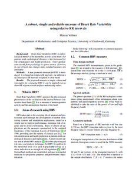
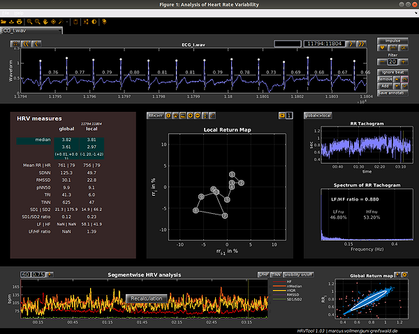
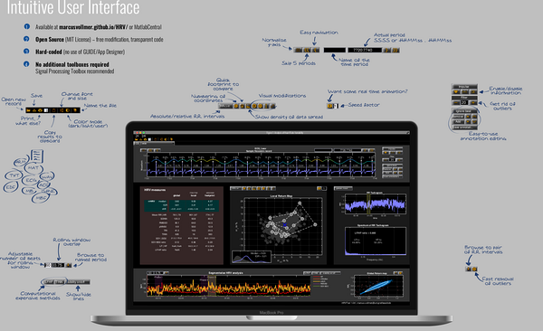
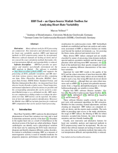
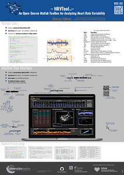

What's new?
27 October 2020
The new Version 1.06 is online. The Matlab App is ready for installation.
What's new: Minor changes in reading and writing edf-files and in the import of ECG-pdfs. Bug fixes in loading mat-files.
10 September 2020
The new Version 1.05 is online.
What's new: The toolbox is ready to import ECG-PDFs (*.pdf) from Apple Watch and AliveCor Kardia that works on all main OS (MacOS, Windows, Linux/UNIX). It also imports the beat ticks (annotations) that comes with the PDF. All you need is a free installation of Inkscape and you need to start Matlab with administrator rights. For Linux systems a faster solution exist when having the packages pdf2svg and pdfminer installed. For the import of PDFs in batch mode you can use the function read_pdf that converts the pdf to Matlab structure. It's now possible to save the annotations as EDF files and to import signals and annotations from workspace variables. Therefore you need to cancel the import of a file, that automatically directs you to a selection dialog of workspace variables. This is also working when loading annotations. Moreover, the power spectrum was not squared, which is now corrected. The table of HRV parameters contains no Approximate Entropy ApEn.
10 September 2020
The poster describing the Toolbox that was presentend at the CinC2020 is available here. It describes briefly the different buttons (scroll further down).
18 February 2020
The toolbox was presented in Sptember 2019 in Singapore at the Computing in Cardiology conference. The paper decribing the toolbox is published in the conference proceedings. Please take note of the citation information at the end of this page.
01 September 2019
The new Version 1.04 is online.
What's new: EDF import function improved to save memory. Saving of pdf-screenshots now with resolution selection with light colors. MIB/MIBF (Machine Independent Beat file, '*.mib', '*.mibf') supported from GE Marquette holter devices.
18 March 2019
The new Version 1.03 is online.
What's new: Added functionality for editing annotations (align all or local beats to next negative or positive peak, button to show/hide beat annotations). Added button to normalize the local waveform. Changed function to animate waveform data. Increased readability of code. Selection of a color scheme (dark, light and user mode). Automated resizing of fonts and setting of the font size by button. Compatibility to R2018b/R2019a.
22 November 2018
The new Version 1.02 is online.
Resolved bug when searching for the AppPath.
07 November 2018
The new Version 1.01 is online.
Whats new: Added functionality for editing and saving annotations (add and remove beats, ignore beats). Support of ISHNE Holter Standard Format ('*.ecg', '*.ann') including signal selection. Selection of beat types when importing PhysioNet and ISHNE annotation files ('*.atr', '*.ecg', '*.ann'). Simplified search for AppPath.
23 October 2018
The new Version 1.00 is online.
What's new: You are now able to read the '*.acq' files from BIOPAC devices.
13 February 2018
The first videos of the English tutorial is finally online. It starts with:
04 October 2017
The new Version 0.99 is online. You can install the App for Matlab.
What's new: You are now able to read the '*.edf' files - the European Data Format - a standard format for medical time series. You are able to select the appropriate signal channel by menu selection. Corrected calculation for Approximate Entropy ApEn in the HRV.m class (included some division instead of substration). Thanks to Sebastian for reporting this bug.
30 March 2017
The new Version 0.98 is online.
Whats new: You are now able to read the '*.csv' files with a comma as a decimal mark. Resolved some bugs in reading the application path and in the path of '*.wav' files.
19 January 2017
The new Version 0.97 is online.
What's new: You are now able to read the ECG from '*.wav' files which are generated from Hexoskin products using the binary file export (explanation on Hexoskin support website).
29 June 2016
The new Version 0.96 is online.
What's new: The application runs with its basic parts independently from additional Matlab Toolboxes. That's why we have created some helper functions which are stored in the class HRV.m. Many thanks to Stefan Frenzel who forced this change and who has written the most helper functions.
01 June 2016
The new Version 0.95 is online.
What's new: You can now load long term raw data (24h-ECGs). An additional beat annotation file can be loaded additionally. Otherwise the integrated heart beat detector will do the annotation for you (on basis of 5 minute segements of your raw data to save memory). In this case you will be asked for the waveform type (Human ECG, Human Pulsatile or Rat ECG). "Fast" settings uses a downsampling step. Other waveform types can be added and parameter settings can be changed manually in order to improve the heart beat detection. The annotation file can be saved separetely. According to the analysis of long term data you are able to type the local period in another format: "00:03:00..00:03:30" (HH:MM:SS..HH:MM:SS) in addition to "180:210" (SS:SS).
31 August 2015
The new Version 0.94 is online.
We are working on standalone applications for Mac OS X, Linux an Windows 64bit. Please be patient.
HRV - what?
Heart Rate Variability (HRV) characterizes the variation of the heart rate when analyzing successive cardiac cycles over a fixed measuring period. HRV is a measurand of the neurovegetative activity and autonomic function of the heart and describes the ability of the heart to change time intervals from one heart beat to the next, continually and without overloading, and to flexibly adjust to different overloads.
We use a measurand which uses relative RR intervals. Detailed information in the paper or poster:

HRVTool - MATLAB based analyzing software?
HRVTool is a application for Matlab R2016b or later releases. It is made for scientists and ordinary people who wants to get know about their Heart Rate Variability. You need just a valid version of Matlab.
Detailed information in the conference proceedings of Computing in Cardiology:

{kind=link}

How to cite?
Please cite HRVTool and the rrHRV method in your publications:

This articles are licensed under a Creative Commons Attribution 4.0 International License.
@inproceedings{vollmer2019hrvtool,
title = {{HRVTool -- an Open-Source Matlab Toolbox for Analyzing Heart Rate Variability}},
author = {Vollmer, Marcus},
booktitle = {{Computing in Cardiology 2019}},
volume = {46},
year = {2019},
doi = {10.22489/CinC.2019.032},
organization = {IEEE}
}
@inproceedings{vollmer2015robust,
title = {{A robust, simple and reliable measure of heart rate variability using relative RR intervals}},
author = {Vollmer, Marcus},
booktitle = {{2015 Computing in Cardiology Conference (CinC)}},
pages = {609--612},
year = {2015},
doi = {10.1109/CIC.2015.7410984}
organization = {IEEE}
}
User manual


Support or Contact
Having trouble with HRVTool? Check out the documentation or contact marcus.vollmer@uni-greifswald.de and we´ll help you.
Check out my GitHub profile (@MarcusVollmer) or my home page at the Institute of Bioinformatics (University Medicine Greifswald).